Pepsi × Paynet × Kia · Рамадан
УСПЕТЬ
К ИФТАРУ
Режиссёрский тритмент · Версия 1 — «Экшен»
Механика акции · 2 месяца
ОТКРОЙ. ВВЕДИ.
ВЫИГРАЙ.
01 · Открой
Под жёлтой крышкой Pepsi — уникальный код. QR-код — на этикетке.
02 · Введи в Paynet
Сканируешь QR и вводишь код из-под крышки в приложении Paynet.
03 · Выигрывай
Гарантированный денежный приз на карту Paynet — или один из 8 Kia Sonet Prime.
2
месяца акции
1,5 МЛН
денежных призов — от 5 000 до 100 000 сум
8
Kia Sonet Prime — розыгрыш каждую неделю
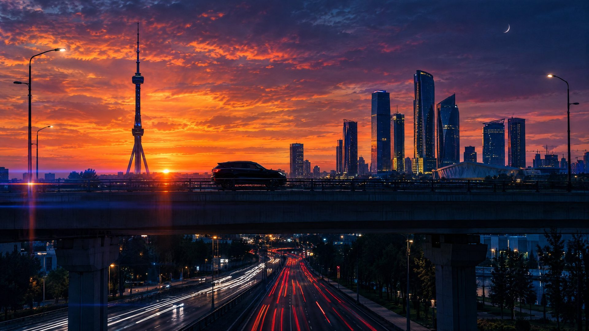
Инсайт
ГОРОД СПЕШИТ
ДОМОЙ
За несколько минут до ифтара весь Ташкент в движении: кто-то заканчивает работу, кто-то в пробке, кто-то ещё в магазине. Молодёжь не сидит за столом заранее — она успевает в последний момент.
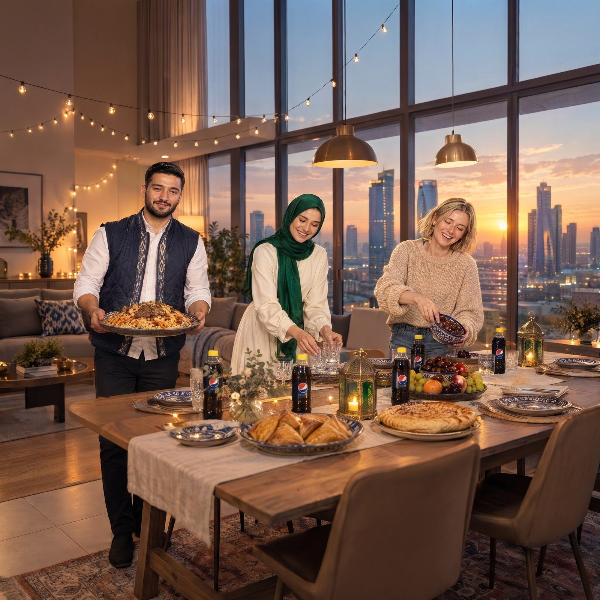
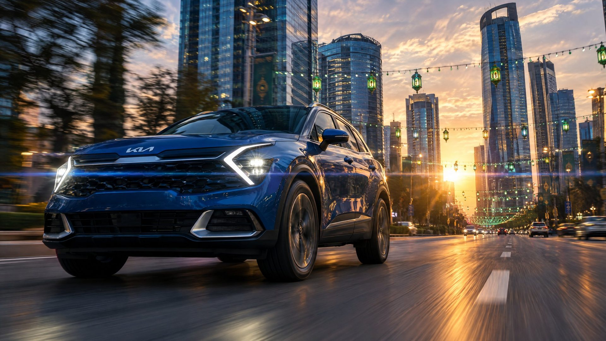
Дома · тепло и тишина
Город · гонка со временем
ОДИН ВЕЧЕР.
ДВА ТЕМПА.
Дома время течёт медленно — в городе оно горит. Параллельный монтаж держит оба мира, пока они не встретятся у одной двери.
Кастинг · рабочие имена
ГЕРОИ
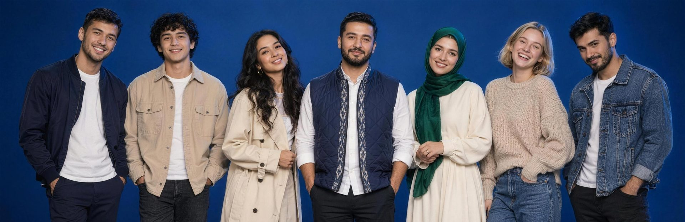
Шерзод
летит соло
Жасур
за рулём Kia
Мадина
девушка Жасура
Бекзод
хозяин дома
Нилуфар
хозяйка
Катя
подруга Нилуфар
Фарух
тот, кто выиграл
Локации
ГДЕ СНИМАЕМ
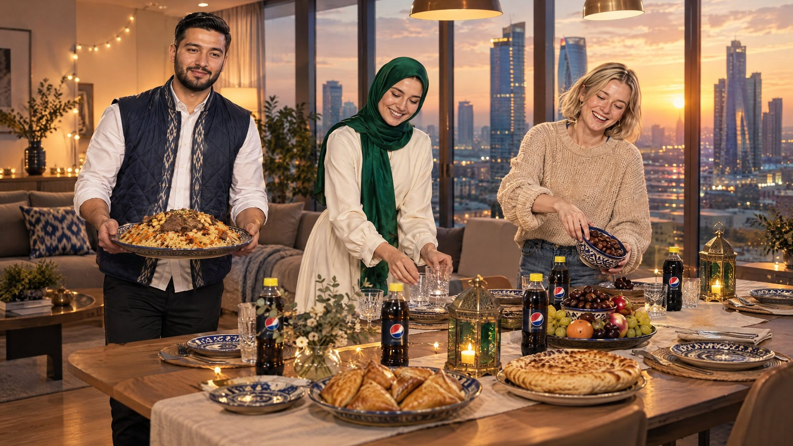
Дом
Современная квартира с видом на Tashkent City: светлое дерево, панорамные окна, зелёные фонарики.
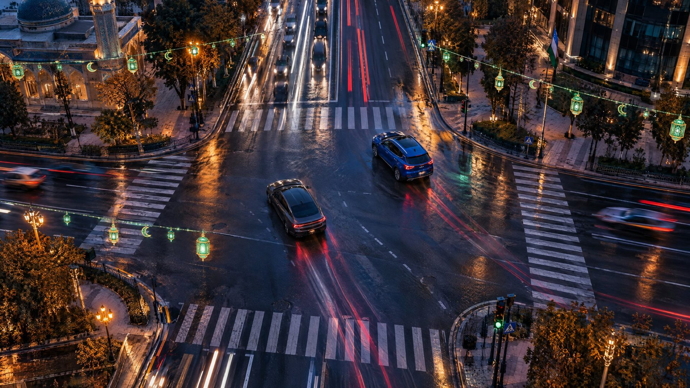
Город
Проспекты, перекрёстки и мосты на закате. Гирлянды-фонарики над дорогой.
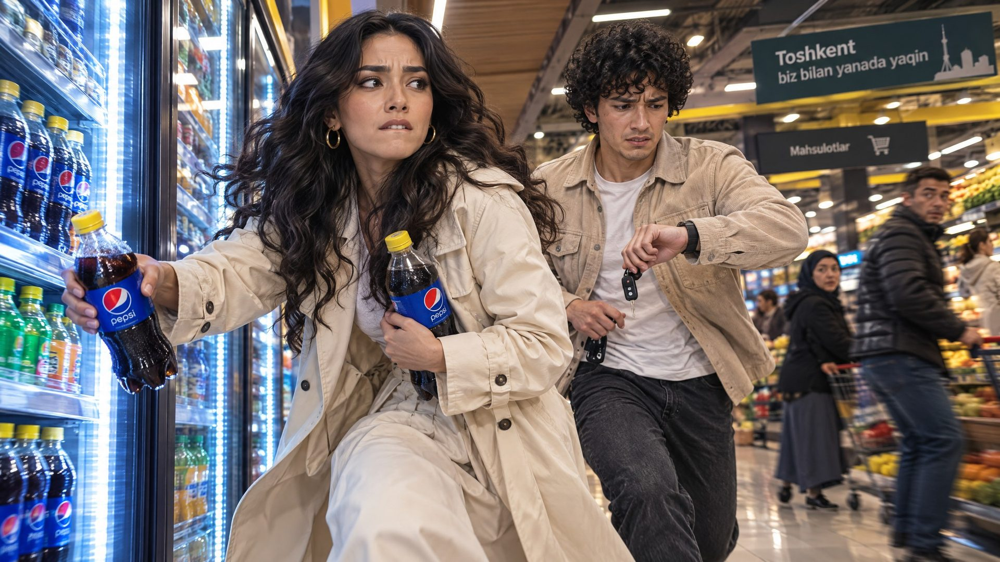
Магазины
Минимаркет у дома и большой супермаркет — для параллельного монтажа.
Автосалон Kia
Светлый шоурум и новый Kia Sonet Prime с бантом — место финального сюрприза.
Визуальный язык
СТРОЧКИ ЖИВУТ В КАДРЕ
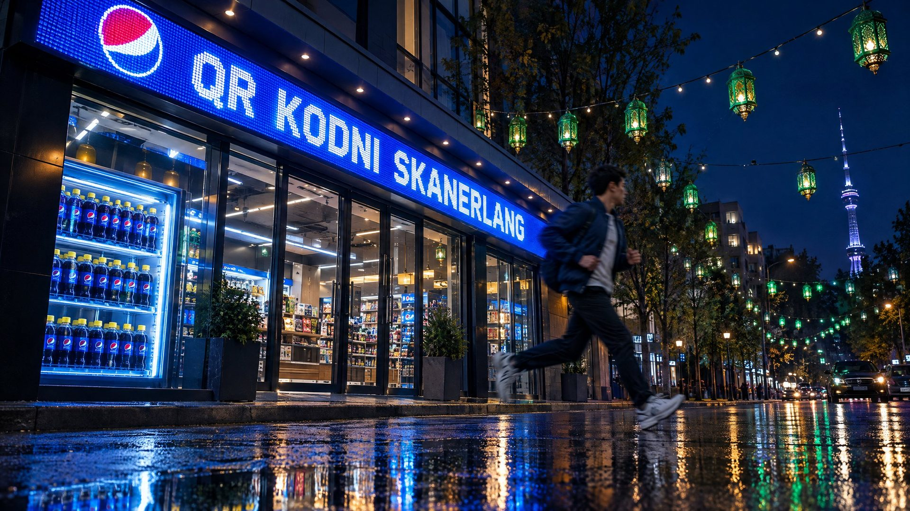
Строчка песни — бегущей строкой на вывеске магазина у дома
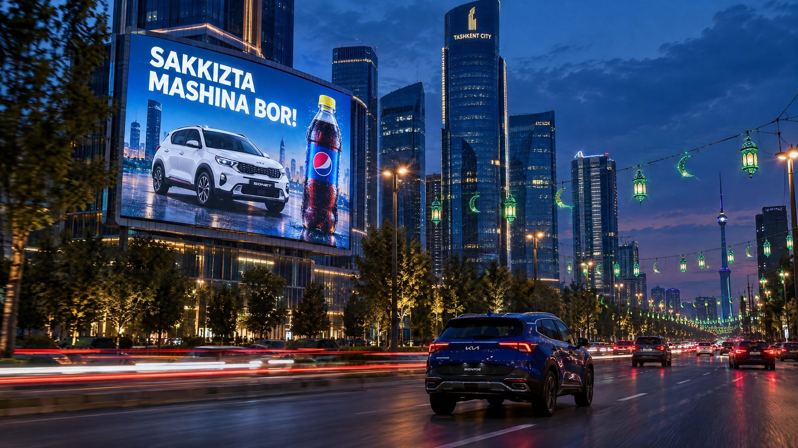
«Sakkizta mashina bor!» — билборд над проспектом в погоне
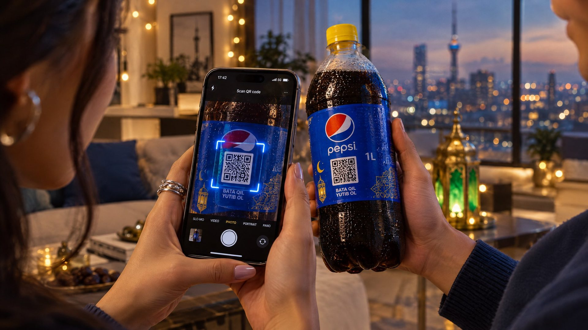
Механика — прямо на этикетке: QR и призыв
Свет
Золотой час переходит в синие сумерки: тёплые лица, глубокие тени.
Камера
Близко, низко, широко. Облёты, резкие панорамы, монтаж в бит.
Бренд
Не поверх кадра, а внутри: вывески, билборды, жёлтые крышки.
Музыка
ОДНА ПЕСНЯ —
ДВА ЗВУКА
Атмосфера праздника
Звучит традиционная мелодия «Рамазон айтиш» в ретроисполнении.
Опаздываем!
Ретромелодия превращаясь в современный экшен-трек. Та же песня продолжается в энергичной обработке и со словами об акции.
Assalomu alaykum, bizlar keldik,
Ramazon yo‘lini izlab keldik.
Как вариант, первые две строчки могут быть слышны с улицы, либо просто быть частью музыкальной композиции.
Сцена 01
АТМОСФЕРА ПРАЗДНИКА
Вечер. Последние лучи солнца освещают город. Уютный, красиво украшенный дом. Зелёные фонарики, праздничные огни, богато накрытый стол, на котором обязательно стоят бутылки Pepsi. Молодые муж, жена и подруга жены, готовятся к ифтару. Кто-то расставляет посуду, кто-то приносит еду, кто-то раскладывает финики. Камера плавно проходит сквозь пространство.
МУЗЫКА: Звучит традиционная мелодия «Рамазон айтиш» в ретроисполнении.
Assalomu alaykum, bizlar keldik,
Ramazon yo‘lini izlab keldik.
01 Атмосфера
02 Опаздываем
03 Миссия
04 Гонка
05 Встреча
06 Ифтар
Сцена 01 · раскадровка
АТМОСФЕРА ПРАЗДНИКА
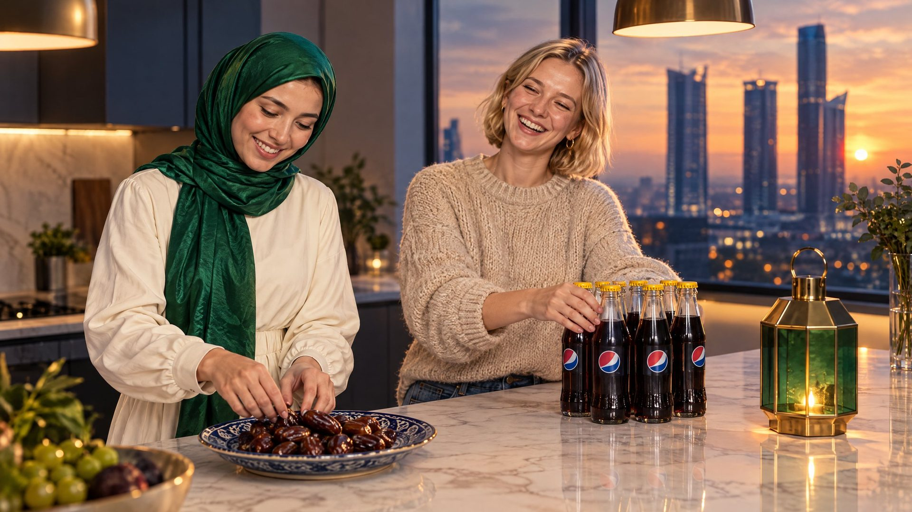
01
Общий: слайдер сквозь гостиную, за окнами — Tashkent City в закате.
02
Крупно: Нилуфар зажигает фонарик, огонь отражается в стекле.
03
Деталь: финики ложатся на синюю риштанскую тарелку.
04
Катя выстраивает Pepsi с жёлтыми крышками — первый кадр продукта.
01 Атмосфера
02 Опаздываем
03 Миссия
04 Гонка
05 Встреча
06 Ифтар
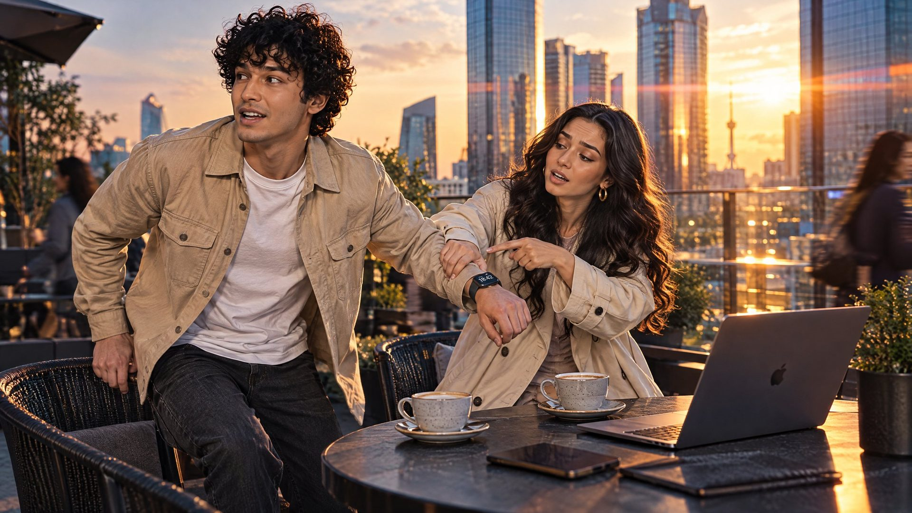
Сцена 02
ОПАЗДЫВАЕМ!
Резкая смена кадра. В разных частях города два друга, один из них с подругой, одновременно смотрят на время. До ифтара остаются считаные минуты. Все понимают: опаздывают! Но и понимают, что приходить в гости с пустыми руками, не хорошо.
МУЗЫКА: Ретромелодия превращаясь в современный экшен-трек. Та же песня продолжается в энергичной обработке и со словами об акции.
01 Атмосфера
02 Опаздываем
03 Миссия
04 Гонка
05 Встреча
06 Ифтар
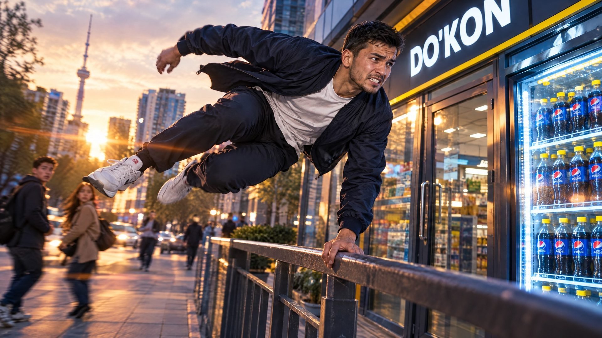
Сцена 03
МИССИЯ —
PEPSI
Начинается динамичный параллельный монтаж. Один парень буквально влетает в магазин, огибая препятствия, эффектно перепрыгивает через невысокое ограждение.
Pepsining qopqog‘i bor,
Qopqoq ostida kodi bor.
01 Атмосфера
02 Опаздываем
03 Миссия
04 Гонка
05 Встреча
06 Ифтар
Сцена 03 · параллель
МИССИЯ — PEPSI
Второй с подругой, в другой части города в магазине, все бросают и начинают спешить. Оба почти синхронно хватают бутылки Pepsi с узнаваемыми жёлтыми крышками. Короткий эффектный макрокадр продукта.
Sariq qopqoqni oching,
QR kodni skanerlang.
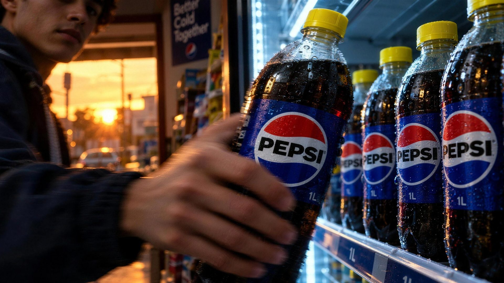
01 Атмосфера
02 Опаздываем
03 Миссия
04 Гонка
05 Встреча
06 Ифтар
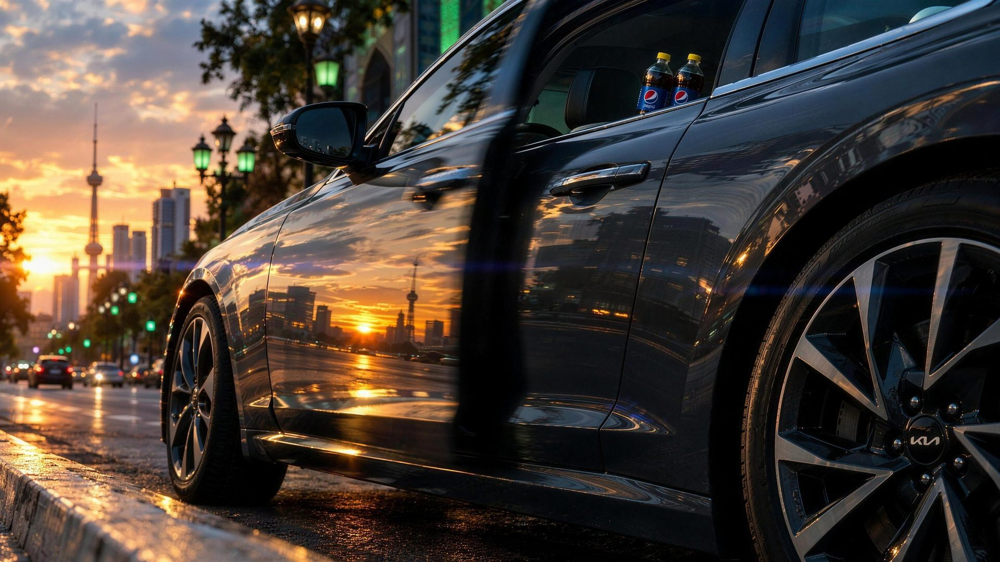
Сцена 04
ГОНКА СО
ВРЕМЕНЕМ
Двери двух автомобилей Kia захлопываются в ритм музыки. Оба опаздывающих друга и подруга, каждый в своей машине Kia.
Kodni Paynetga kiriting,
Omadingizni bir sinang!
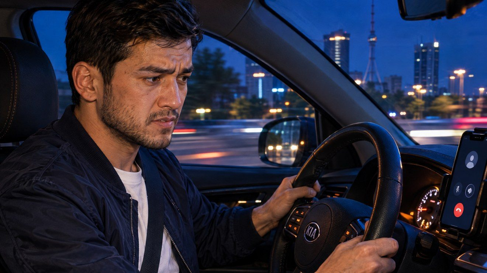
01 Атмосфера
02 Опаздываем
03 Миссия
04 Гонка
05 Встреча
06 Ифтар
Сцена 04 · раскадровка
ГОНКА СО
ВРЕМЕНЕМ
Стремительный монтаж в стилистике голливудских автомобильных экшенов: низкие ракурсы, эффектные повороты, отражения городских огней на кузовах, динамичные пролёты камеры.
Bir yarim million yutuq bor,
Besh mingdan yuz minggacha bor!
04.1 Дрон. Две Kia расходятся на перекрёстке.
04.2 Трекинг. Sportage вдоль Tashkent City.
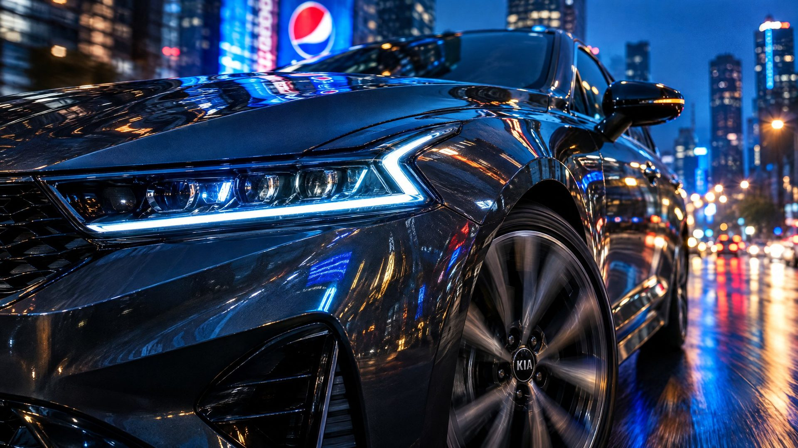
04.3 Макро. Огни скользят по капоту K5.
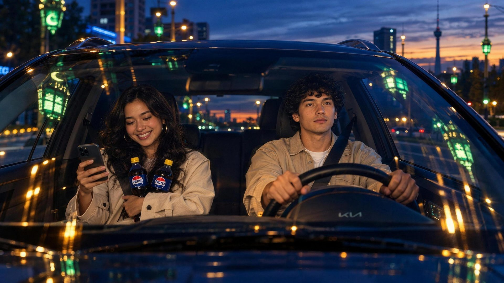
04.4 Салон. Мадина на связи, Жасур — за рулём.
01 Атмосфера
02 Опаздываем
03 Миссия
04 Гонка
05 Встреча
06 Ифтар
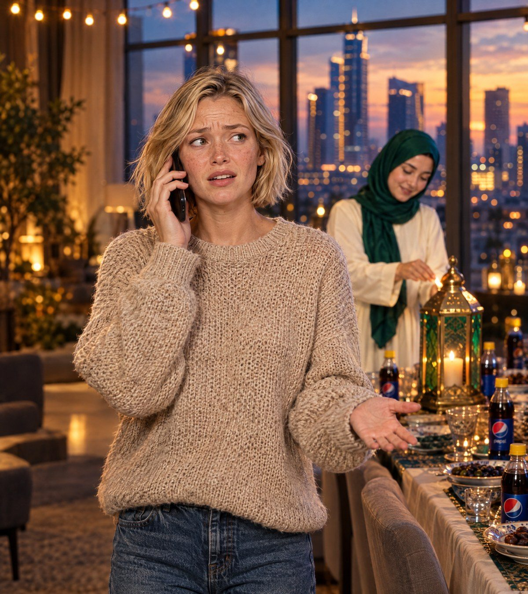
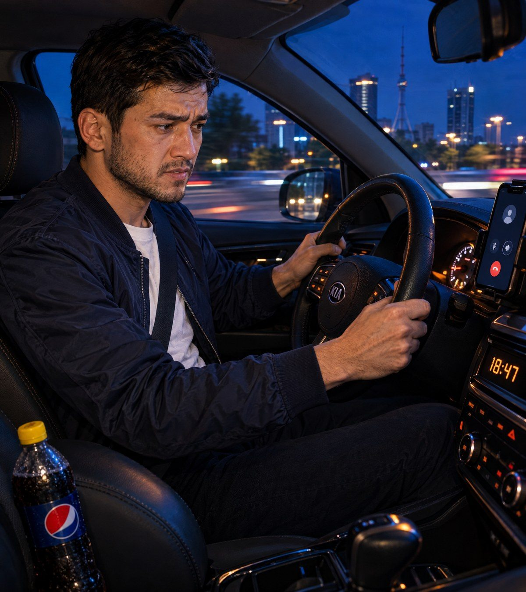
— Ты где?!
— Уже еду!
Сцена 04 · перебивка
Всё это перебивается кадрами дома, где царит совершенно другая атмосфера — спокойная, тёплая, праздничная. Подруга по телефону: — Ты где?! Резкий переход в автомобиль опаздывающего: — Уже еду! Удар музыкального бита. Снова экшен.
01 Атмосфера
02 Опаздываем
03 Миссия
04 Гонка
05 Встреча
06 Ифтар
Сцена 04 · финал гонки
ГОНКА СО
ВРЕМЕНЕМ
Машины приближаются к месту встречи. Солнце практически скрылось за горизонтом.
Kia Sonet Prime ham bor,
Sakkizta mashina bor!
01 Атмосфера
02 Опаздываем
03 Миссия
04 Гонка
05 Встреча
06 Ифтар
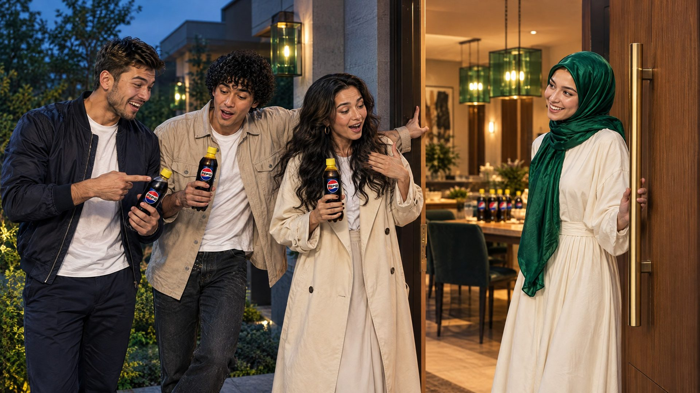
Сцена 05
НЕОЖИДАННАЯ
ВСТРЕЧА
Op chiqing, op chiqing,
Pepsi olib chiqing!
Оба друга и подруга, практически одновременно подбегают к двери. Дверь открывается. Они смотрят друг на друга и замечают, что оба принесли Pepsi. С улыбкой переглядываются. Затем через дверь, акцент на стол, где уже так же стоит Pepsi. Короткая пауза. Все смеются.
01 Атмосфера
02 Опаздываем
03 Миссия
04 Гонка
05 Встреча
06 Ифтар
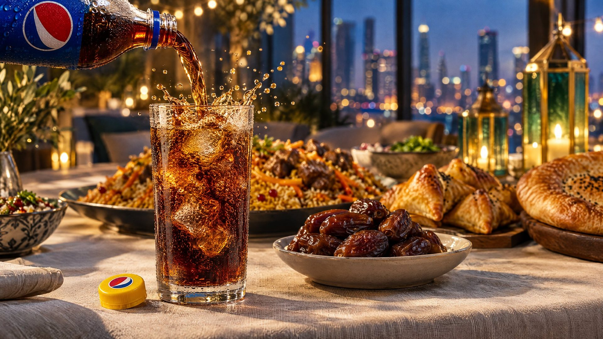
Сцена 06
PEPSI
ОБЪЕДИНЯЕТ
Наступил ифтар. Быстрая, сочная нарезка: финики, ароматные национальные блюда, открывающаяся жёлтая крышка, холодная Pepsi льётся в стакан.
01 Атмосфера
02 Опаздываем
03 Миссия
04 Гонка
05 Встреча
06 Ифтар
Сцена 06 · механика в кадре
PEPSI ОБЪЕДИНЯЕТ
Короткими акцентами видим QR-код, код под крышкой и интерфейс Paynet. На фоне начинает звучать сообщение об акции Pepsi, Paynet и Kia.
QR-код
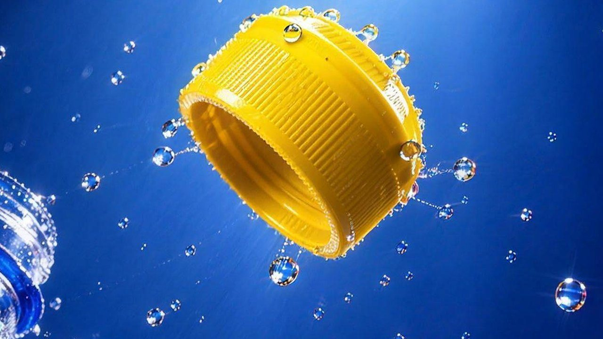
Код под крышкой
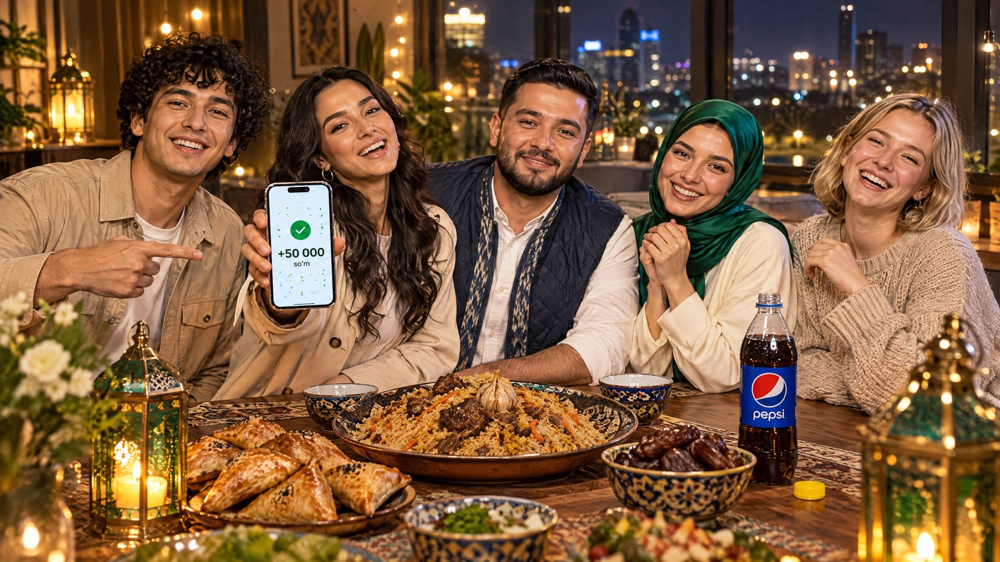
Интерфейс Paynet
01 Атмосфера
02 Опаздываем
03 Миссия
04 Гонка
05 Встреча
06 Ифтар

Финальный пэкшот
ОТКРЫВАЙ
БОЛЬШЕ
В РАМАДАН!
Эффектная композиция: Pepsi, жёлтая крышка, денежные призы Paynet и автомобиль Kia Sonet Prime. На экране появляются основные условия акции, размер призов и ключевой слоган: «Открывай больше в Рамадан!»
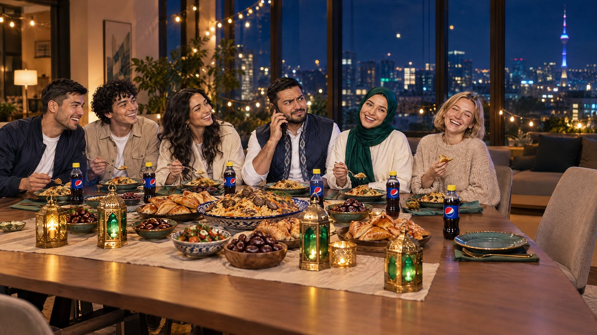
Афтерпэкшот
«А ГДЕ ОН?»
Возвращаемся к праздничному столу. Все друзья уже собрались. Один замечает пустующее место. — А Фарух где? Друг набирает его номер.
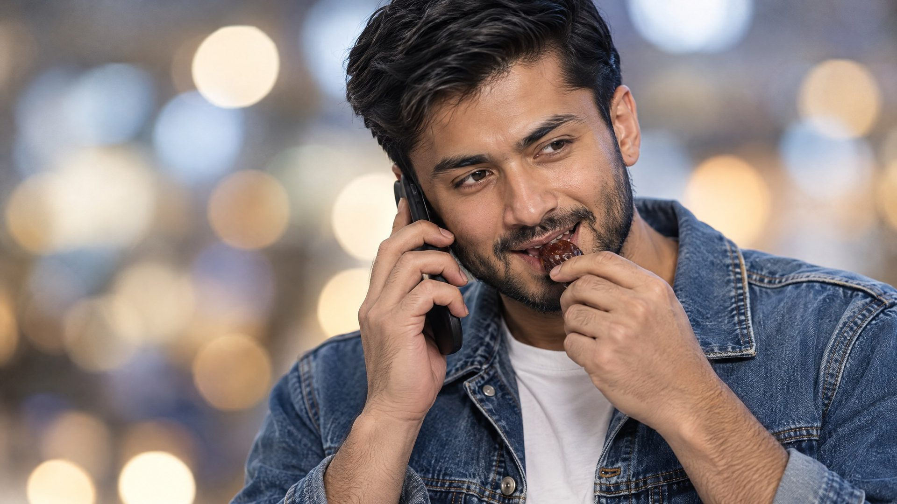
Афтерпэкшот · склейка
КРУПНЫЙ
ПЛАН
СКЛЕЙКА. Крупный план Фаруха. Он спокойно доедает финик, разговаривая по телефону.
— Да-да, уже еду!
Афтерпэкшот · общий план
ФИНАЛ
Камера резко отъезжает на общий план. Мы видим: он находится в автосалоне Kia! Менеджер торжественно вручает ему ключи от новенькой Kia Sonet Prime — автомобиля, который он выиграл в акции Pepsi. Фарух с довольной улыбкой принимает ключи. ФИНАЛ.
Pepsi × Paynet × Kia
RAHMAT!
Открывай больше
в Рамадан!
Версия 1 · «Успеть к ифтару»